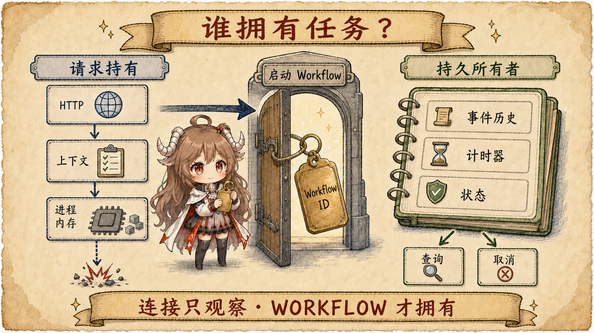
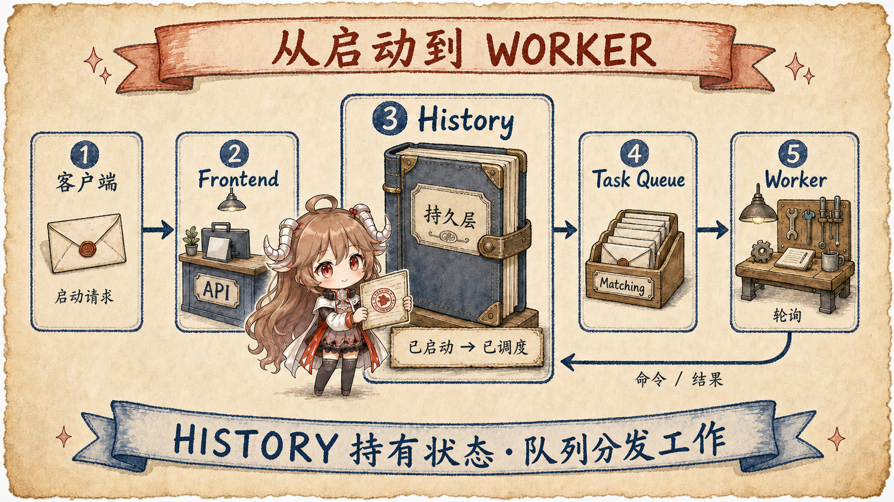
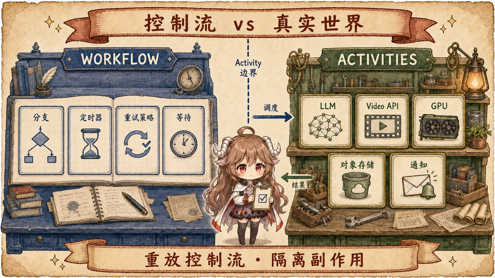
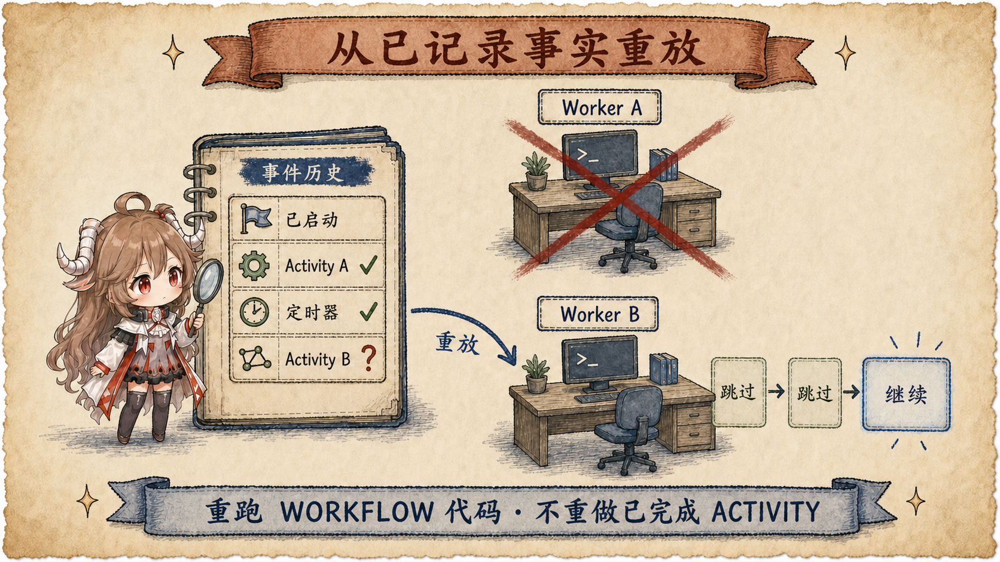
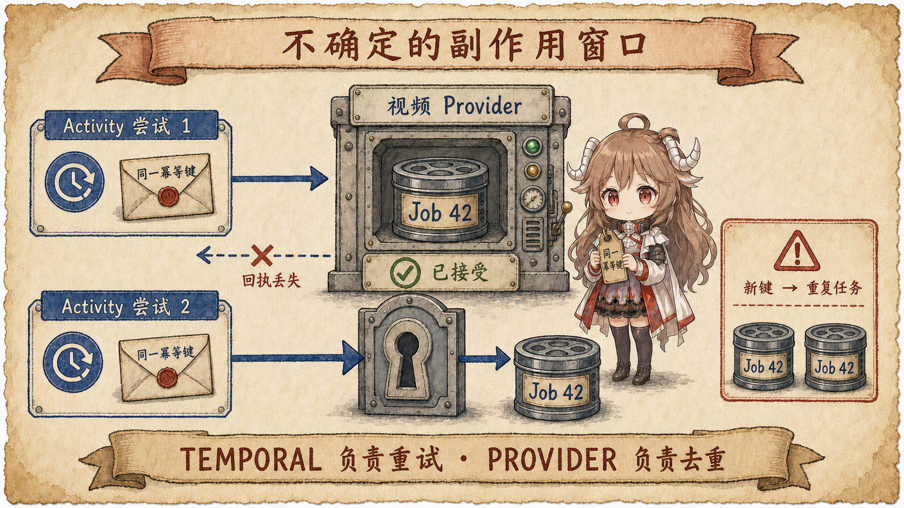
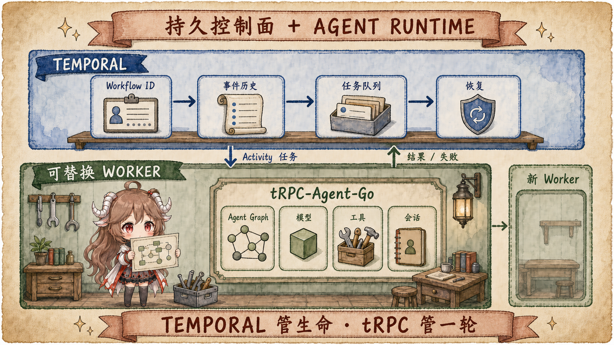

想象一个很具体的产品请求：用户输入一首歌和一句画面描述，系统先生成脚本，再把它拆成八个镜头； 八个镜头分发到不同的视频模型或 GPU worker，失败的镜头要重试，完成后还要统一调色、配字幕、合成、上传，最后通知用户。 整条链路可能跑二十分钟，也可能因为额度、排队和人工确认拖到几小时。
如果后端只是收到 HTTP 请求后启动一个 goroutine，这段代码确实“在跑流程”。但浏览器一刷新，前端便失去进度；
pod 一重启，内存里的流程就消失；视频服务已经接单而响应恰好丢失时，简单重试还可能生成两份付费任务。
这不是再加几个 if err != nil 能补齐的问题，而是任务的所有权放错了地方：
它仍然属于某条连接和某个进程，而没有成为一个独立、持久、可恢复的执行实体。
证据边界。 Temporal 的平台语义以官方文档和固定源码快照为准；服务内部链路来自 temporalio/temporal。 对 tRPC-Agent-Go 的判断来自 公开源码快照。 外部视频 provider 怎样去重、取消和回调不属于 Temporal 可见内部，本文只讨论它能约束的集成边界。
阅读契约。 这篇文章跟随同一支 AI MV，依次追踪请求连接、Temporal Service、Workflow、Activity、Worker、外部视频服务和对象存储。 读完后，应当能回答：哪一层拥有流程状态，哪一步可以重放，哪一种副作用仍然必须由业务做幂等。
全文围绕五个问题展开：
- “前端挂了但后端还在跑”究竟缺少哪一层能力？
- Temporal 为什么要同时有 Workflow、Activity 和 Worker？
- Event History 怎样把一个进程内函数变成可恢复执行？
- 为什么 Temporal 仍然不能承诺外部视频任务绝不重复？
- 它和 tRPC-Agent-Go、任务队列、Argo、Step Functions 分别是什么关系？
一、先换一个所有者：任务不再属于 HTTP 请求
最容易理解 Temporal 的方式，不是先背服务名，而是先看所有权变化。 普通请求式设计里，连接持有 context，context 持有 goroutine，goroutine 持有当前步骤和局部变量。 用户关闭页面可能触发取消；即使使用 detached context 让它继续，进程退出后这些状态也没有新的主人。
Temporal 让客户端先创建一个 Workflow Execution。它有稳定的 Workflow ID 和一次运行对应的 Run ID； 后续查询、Signal、Update、取消和恢复都围绕这个执行实体发生。官方把它定义为 durable、reliable、scalable 的函数执行： 状态面对失败仍然持久，并从最近记录的位置继续。 这里的 durable 不是“一个 goroutine 活得很久”，而是“进程可以不活，执行身份仍然活着”。 参见 Workflow Execution 官方概念。

1.1 三个容易混淆的“前端”和“worker”
在这个话题里，同一个词常常指不同东西。浏览器前端是用户界面；Temporal 源码里的 Frontend Service 是接收 gRPC API 的集群服务； Temporal Worker 是用户部署、负责执行 Workflow 和 Activity 代码的进程。它又不同于 Agent 系统里被称为 worker 的子 Agent。
| 词 | 本文含义 | 它拥有的东西 |
|---|---|---|
| Client / UI | 浏览器、App 或业务 API。 | 创建任务、保存业务 ID、展示状态，不拥有执行内存。 |
| Temporal Service | Frontend、History、Matching 等服务与持久层。 | 执行身份、事件历史、任务队列与计时器。 |
| Temporal Worker | 轮询 Task Queue、运行用户代码的进程。 | 一次短暂的 Workflow Task 或 Activity attempt。 |
| Agent worker | 父 Agent 委派出去的角色或后台 run。 | 某段 Agent 语义，不天然拥有 durable execution。 |
二、一次创建请求怎样变成可恢复的工作流
现在让这支 AI MV 真正进入 Temporal。业务 API 使用 SDK 调用 StartWorkflowExecution，携带 Workflow ID、Workflow Type、
Task Queue 和输入。Temporal 仓库的 README 也明确指出：这个仓库是
Temporal Server，
Workflow、Activity 和 Worker 应通过语言 SDK 编写。它不是 import 后便自动接管 goroutine 的普通库。

2.1 Frontend 接受的是创建执行，不是占住连接
服务入口
WorkflowHandler.StartWorkflowExecution
会准备请求、解析 namespace，然后把创建请求交给 History Service。源码注释直接说明它会创建
WorkflowExecutionStarted 事件并调度第一个 Workflow Task。
所以 Start 成功返回后，浏览器继续连着并不是执行成立的条件。
2.2 History 先落记录，再让 Worker 推进
History Service 为每个 Workflow Execution 维护 mutable state 和追加式 Event History。
仓库的架构说明把核心设计写得很直白：每次执行都有 append-only history，完整状态可通过 replay 重建；
Workflow 代码必须确定且无副作用，Activity 则需要幂等或明确不重试。
参见
docs/architecture/README.md。
用形状级事件简化表示，刚启动时保存的不是 Go 调用栈，而是足以重建下一步的事实：
[
{ "event": "WorkflowExecutionStarted", "workflowId": "mv-20260710-42" },
{ "event": "WorkflowTaskScheduled", "taskQueue": "mv-orchestrator" }
]
Worker 从 Task Queue 取走 Workflow Task，重放 Workflow 函数，直到它遇到需要等待的 Activity、Timer、Signal 或 Child Workflow，
再把“接下来应该做什么”的 Commands 交回服务端。Matching 的
PollWorkflowTaskQueue
展示的正是 worker 轮询和取任务的服务边界。
三、Workflow 管控制流，Activity 承担真实世界
为什么不能把“生成镜头、上传文件、发通知”全写在 Workflow 函数里？因为恢复依赖 replay。 同一段 Workflow 代码可能运行多次，它必须在相同历史下产生相同 Commands；读取当前时间、随机数、直接调用视频 API，都会让重放路径漂移。 Temporal SDK 因此把非确定性和副作用推出 Workflow，放进 Activity。

3.1 一支 MV 的边界应该怎样切
| 步骤 | 建议边界 | 为什么 |
|---|---|---|
| 拆脚本、决定镜头列表 | LLM Activity 返回结构化镜头表。 | LLM 非确定，结果记录后 replay 不再重复调用。 |
| 提交每个镜头 | 每个镜头一个 Activity 或 Child Workflow。 | 独立重试、限流、取消和观察。 |
| 等待外部生成 | Signal/webhook、异步完成或轮询 Activity。 | 等待期间不占用 worker 线程。 |
| 合成与上传 | 长 Activity，产物写对象存储。 | 大视频不进入 Event History，只保存 URI 与元数据。 |
| 通知用户 | 独立幂等 Activity。 | 合成重试不应重复发送通知。 |
Temporal 官方同样把 media transcoding、LLM call、large download 列为 Activity 的代表场景，并建议把大功能拆成多个 Activity， 以获得更小的失败恢复范围、更清楚的 timeout 和更容易实现的幂等性。 参见 Temporal Activities。
3.2 等待不是让 goroutine 睡着
视频 provider 返回 job ID 后，Workflow 可以等待 Signal、Timer 或 Activity Future。等待状态已经在服务端可重建， 没有 worker 时它也不需要占住一个业务线程。外部 webhook 到达后，业务 API 把结果作为 Signal 写入 Workflow； 用户要求换风格或取消时，也可以通过 Signal、Update 或 cancellation request 改变后续路径。 Query、Signal、Update 的读写语义可见 Workflow Message Passing。
四、恢复发生在“最后一个已记录事实”之后
Event History 不保存 worker 的堆栈，而是保存已经被服务端接受的状态转换。 新 worker 取得 Workflow Task 后，从函数开头 replay；SDK 把历史中已有的 Activity 结果、Timer 和 Signal 重新喂给代码， 并检查它产生的 Commands 是否与历史一致。走到第一个尚未记录的动作时，才真正继续执行。

4.1 浏览器断开、Workflow Worker 崩溃、Activity Worker 崩溃并不相同
| 故障 | Temporal 看见什么 | 恢复方式 |
|---|---|---|
| 浏览器/SSE 断开 | Workflow 没有变化。 | 前端之后用业务 ID 重新查询或订阅。 |
| Workflow Worker 崩溃 | Workflow Task 未完成或超时。 | 另一 worker replay history，再生成 Commands。 |
| Activity Worker 崩溃 | Activity 没有完成回执，最终触发 timeout。 | 按 Retry Policy 重新调度 Activity attempt。 |
| Temporal Service 短暂不可用 | 已提交历史仍在持久层。 | 服务恢复后继续派发；实际保障取决于集群与存储部署。 |
对长 Activity，heartbeat 同时承担存活检测、取消传递和应用层进度 checkpoint。
例如合成 8000 帧时，可以把最近完成的分片写入 heartbeat details；worker 失联后，下一次 attempt 读取这份进度继续。
官方文档说明 Start-To-Close timeout 用于发现 worker crash，heartbeat payload 可交给下一次 attempt：
Detecting Activity Failures。
服务端对应入口也把 heartbeat 的两个用途写在注释里：报告 liveness 与 progress，见
RecordActivityTaskHeartbeat。
五、最危险的缝：外部服务已经成功，回执却丢了
到这里很容易产生一个误读：“用了 Temporal，每一步就 exactly once。”事实不是这样。 Workflow 控制逻辑能通过 history 获得 effectively-once 的执行效果；Activity 与外部系统之间仍然存在经典的不确定窗口。
submit_scene(scene-03)已让视频 provider 创建付费任务。- provider 返回 job ID 之前，worker 或网络断开。
- Temporal 只知道 Activity 没有完成，于是按策略重试。
- 第二次请求若没有同一幂等身份，provider 可能再创建一个任务。

5.1 幂等键必须和逻辑动作绑定
一个实用做法是用 workflowId + sceneId + operation 生成稳定幂等键，并让 provider 或自己的提交表以它去重。
provider job ID 返回后立即作为 Activity result 持久化；后续等待和查询围绕 job ID 进行。
如果 provider 没有幂等 API，就需要在自己的数据库里建立 submission ledger，并接受“调用成功但本地未记录”无法被纯客户端彻底消除的边界。
{
"workflow_id": "mv-20260710-42",
"scene_id": "scene-03",
"operation": "submit-video",
"idempotency_key": "mv-20260710-42:scene-03:submit-video"
}5.2 取消也是协作协议，不是远程 kill
Workflow 收到取消请求后，可以取消还未开始的步骤，并向正在运行的 Activity 传递 cancellation。 但 Activity 需要 heartbeat 或主动检查 context 才能及时收到；外部 provider 还必须提供 cancel API，业务 Activity 才能真正终止远端 GPU 任务。 因此“Temporal 中显示 Canceled”与“所有外部算力立刻停止”不能画等号。
六、tRPC-Agent-Go 在 worker 内搭流程，Temporal 管 worker 外的生命
对 Agent 框架而言，Temporal 不是另一套 GraphAgent。两者回答的问题不同：tRPC-Agent-Go 负责模型、工具、子 Agent、事件流和图节点怎样执行； Temporal 负责一次长任务的身份、状态、重试、计时、消息和恢复怎样越过进程边界。

6.1 tRPC-Agent-Go 已经有哪些接近的积木
| 能力 | 当前能解决什么 | 还没有自动解决什么 |
|---|---|---|
WithDetachedCancel | 父请求 cancel 后，当前进程里的 run 可以继续。 | 进程重启和多节点恢复。 |
| Dynamic Workflow | 临时 Python 代码编排多个 Agent。 | 第一版明确是前台一次性执行，不保存执行状态。 |
| Graph checkpoint | 保存 state、frontier，支持显式 resume 和 time travel。 | 谁发现 owner 死亡、谁抢占并恢复、外部 Activity 语义。 |
taskrun.Controller | run ID、status、wait、cancel、child session 的控制面。 | 内置实现是单进程；分布式存储、队列和 lease 由产品实现。 |
这些边界都能从源码直接验证。Dynamic Workflow 文档称第一版为
“前台、一次性执行”；
taskrun 文档要求多节点实现基于
外部存储、队列、lease 与跨节点取消；
内置 FileStore 加载到未结束 run 时，
normalizeLoadedRuns
会把它标记为被前一次 runtime restart 中断，而不是继续执行。
6.2 两种接法的取舍
粗粒度接法是把一次完整 runner.Run 作为 Activity。改造小，但 worker 在 Agent 运行中途崩溃时，整个 invocation 可能重试，
LLM 与工具副作用需要更强幂等。细粒度接法则把 LLM call、tool call、视频提交和人工等待分别变成 Activity 或 Child Workflow；
恢复点和可观测性更好，但会把 Agent loop 改造成 durable state machine，接入成本明显更高。
因此更稳妥的产品边界不是让 Agent 框架重造 Temporal，而是保留一个可替换的 durable controller 接口： 简单部署使用进程内 taskrun；需要跨节点恢复时接 Temporal、云状态机或业务自己的调度平台。
七、业界没有唯一答案，先按恢复压力选层级
Temporal 是成熟的 durable execution 平台，源自 Uber Cadence；但“长任务”并不自动意味着必须使用 Temporal。 如果流程只有一个可幂等的异步视频 API，数据库任务表加消息队列可能已经足够；如果主要压力是 Kubernetes GPU DAG，Argo Workflows 更贴近算力调度； 如果团队完全运行在 AWS，Step Functions 能减少自建控制面的运维。
| 方案 | 更适合的压力 | 主要代价 |
|---|---|---|
| Temporal / Cadence | 代码式长流程、Signal/HITL、复杂恢复、跨服务编排。 | 确定性约束、worker 版本治理、集群或 Cloud 成本。 |
| Restate / DBOS / Inngest | 希望以更轻的服务或 Postgres/step 模型获得 durable execution。 | 生态、语言与部署模型各不相同，需要按边界验证。 |
| AWS Step Functions / Azure Durable Functions | 深度绑定云服务，优先托管运维。 | 云绑定、状态机与费用模型。 |
| Argo / Airflow / Prefect / Dagster | GPU、数据、媒体、ML 批处理 DAG 与调度。 | 交互式消息和应用级长事务不是它们共同的强项。 |
| Queue + DB | 流程短、状态少、团队能自己维护重试与补偿。 | 取消、超时、幂等、可观测和孤儿恢复都要自己补。 |
可直接对照的官方资料包括 Restate、 DBOS、 Inngest、 AWS Step Functions 和 Azure Durable Functions。 它们共同承认的问题是状态、checkpoint、retry 和 recovery；差别在编程模型、部署面与谁来托管执行引擎。
八、把这支 AI MV 压缩成几条可迁移规则
| 如果状态属于 | 应放在哪里 | 保护的 invariant |
|---|---|---|
| 浏览器展示 | 业务 API、可重连事件流、查询接口。 | 断线不改变执行状态。 |
| 流程控制 | Workflow state 与 Event History。 | 进程死亡后可以重建下一步。 |
| 外部副作用 | Activity + 幂等键 + provider job ledger。 | 重试不会静默制造重复成本。 |
| 长步骤进度 | Heartbeat checkpoint 或外部进度表。 | 失败恢复不必从零开始。 |
| 视频与音频产物 | 对象存储，只在 history 保存引用。 | 工作流历史保持小而可重放。 |
| Agent 节点内部状态 | tRPC-Agent-Go session/graph/checkpoint。 | Agent runtime 与 durable control plane 各守边界。 |
所以，“在 worker 里面搭流程”和“让流程活过 worker”不是同一件事。 前者决定一轮活着的时候怎样调用模型、工具和子 Agent；后者决定这轮在承载它的进程消失后，谁还能证明它已经做过什么、下一步该做什么。 Temporal 的价值正是在这里：它把流程从一段短命控制流，变成一个由持久历史驱动、可被新 worker 接手的执行身份。
但真正可靠的 AI 视频系统仍然是组合题：durable orchestrator 管业务生命，GPU/Kubernetes 平台管算力， 对象存储管大产物，Agent runtime 管推理，provider contract 和幂等账本管外部副作用。 只有这些所有者被分清，“前端挂了，后端还在跑”才会从一句模糊需求变成一套能验证的工程语义。